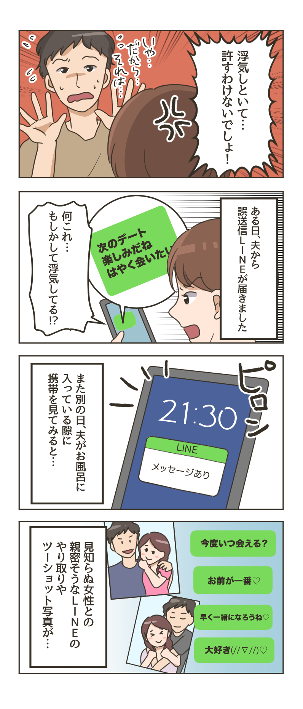
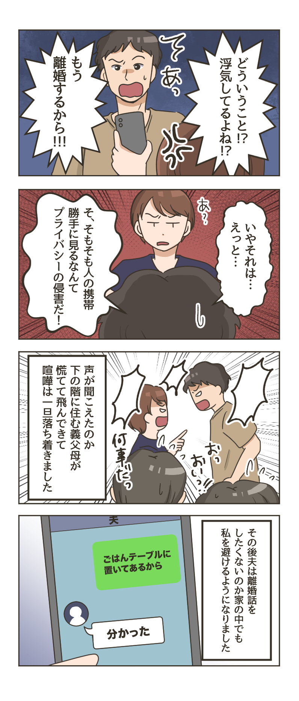

她认为丈夫不忠的事被发现了……如果有一天你突然变成了已婚妇女，你会怎么做？质问丈夫、冷静取证、提出离婚、策划报复……众多选择中，你该选择哪一个？因此，这次我们从热门文章中精选了《不忠丈夫的背叛事件》，这些文章取材于人们的真实经历。
■丈夫出轨同性恋被发现！当我拿到证据走近他时，他说：“就这样再呆一会儿吧……”哈！？


- ※
- 参考健康法律、医疗制度、护理制度、金融制度等时，请务必事先确认公共机构的最新信息。
- ※
- 文章中使用的图像仅用于说明目的。
她认为丈夫不忠的事被发现了……如果有一天你突然变成了已婚妇女，你会怎么做？质问丈夫、冷静取证、提出离婚、策划报复……众多选择中，你该选择哪一个？因此，这次我们从热门文章中精选了《不忠丈夫的背叛事件》，这些文章取材于人们的真实经历。

